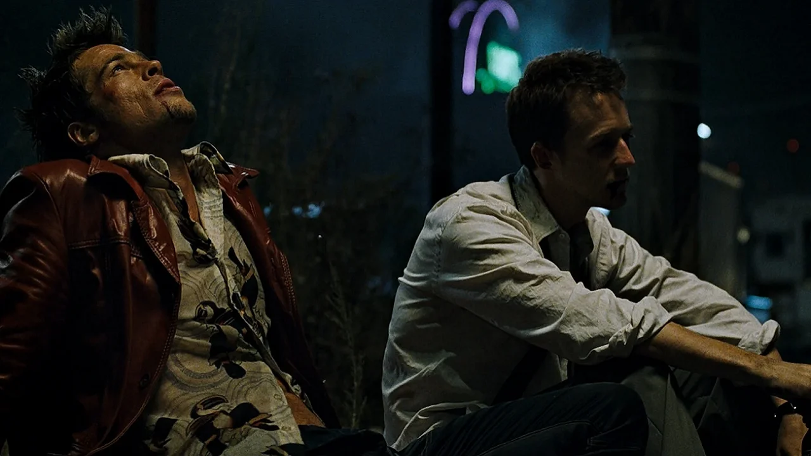

Tudo sobre Clube da Luta (1999)
"As coisas que você possui acabam possuindo você."

Clube da Luta é um filme norte-americano dirigido por David Fincher, baseado no romance homônimo de Chuck Palahniuk. A obra é uma sátira à sociedade de consumo e à alienação masculina no final do século XX...
Sinopse Detalhada
O protagonista anônimo, um funcionário de escritório insone e materialista, encontra a sua vida vazia e sem sentido. Ao conhecer o enigmático Tyler Durden, eles criam o "Clube da Luta", um espaço onde homens podem liberar as suas frustrações e instintos através do combate...
Produção e Estilo
A produção é notável pelo seu estilo visual sombrio e de alta saturação, utilizando técnicas de câmera inovadoras e CGI discreto para retratar o estado mental fragmentado do narrador...
Impacto Cultural
Apesar de um lançamento divisivo, o filme tornou-se um cult clássico, gerando debates profundos sobre masculinidade, niilismo e a cultura corporativa.